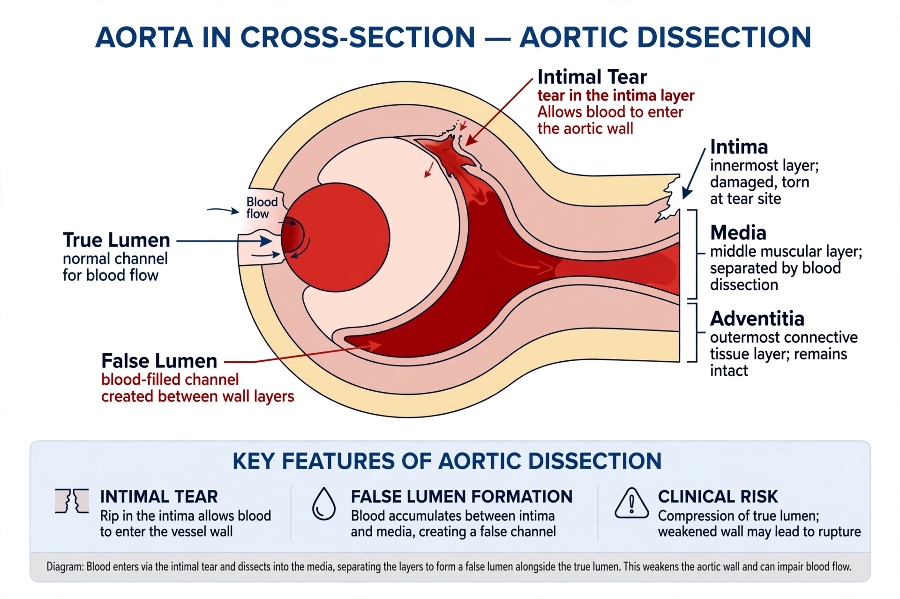

| Aortic dissection | |
|---|---|
 | |
| Specialty | Cardiothoracic surgery, vascular surgery, cardiology |
| Symptoms | Sudden severe tearing chest or back pain, fainting, shortness of breath |
| Causes | Hypertension, connective tissue disorders (e.g. Marfan syndrome), bicuspid aortic valve, trauma |
| Treatment | Blood pressure control; emergency surgery for type A |
| Prognosis | High early mortality without treatment |
Aortic dissection (AD) occurs when an injury to the innermost layer of the aorta allows blood to flow between the layers of the aortic wall, forcing the layers apart and creating a "false lumen" alongside the true lumen. In most cases it is associated with sudden onset of severe chest or back pain, often described as "tearing" in character. Vomiting, sweating and light-headedness may also occur. Damage to other organs may result from the decreased blood supply, including stroke, heart attack or kidney failure.
The classic presentation is abrupt, maximal-at-onset pain, most often felt in the chest and radiating to the back between the shoulder blades. The pain may migrate as the dissection extends along the aorta. Other findings can include a pulse deficit or difference in blood pressure between the arms, fainting (syncope), focal neurological deficits from carotid involvement, and signs of cardiac tamponade if the dissection ruptures into the pericardium.
The most important risk factor is high blood pressure, present in the majority of patients. Other predisposing conditions include connective tissue disorders such as Marfan syndrome, Ehlers–Danlos syndrome and Loeys–Dietz syndrome; a bicuspid aortic valve or other congenital aortic abnormalities; aortic aneurysm; inflammatory diseases of the aorta; chest trauma; and, rarely, stimulant use such as cocaine. Pregnancy, particularly the third trimester and early postpartum period, is also a recognised risk period in susceptible women.
Two systems are commonly used. The Stanford classification divides dissections into type A, involving the ascending aorta (regardless of where the tear originates), and type B, not involving the ascending aorta. The DeBakey classification describes type I (originating in the ascending aorta and extending beyond), type II (confined to the ascending aorta) and type III (originating in the descending aorta).
Diagnosis is usually made by imaging: CT angiography is the most commonly used test because of its speed and accuracy; transoesophageal echocardiography and MRI are also highly accurate. A chest radiograph may show a widened mediastinum but cannot exclude the diagnosis. D-dimer blood testing may be used in low-risk patients.
Management depends on the type. Stanford type A dissections are surgical emergencies and are treated with urgent open surgery to replace the dissected segment of aorta, because mortality rises by roughly 1–2% per hour in the first day or two without surgery. Type B dissections are usually managed medically with aggressive control of blood pressure and heart rate (to reduce aortic wall stress), unless complications such as organ malperfusion, rupture or uncontrolled pain occur, in which case endovascular stent-grafting (TEVAR) or surgery may be needed.
Aortic dissection occurs in roughly 3 per 100,000 people per year and is more common in men and in people aged 50–70. King George II of Great Britain is often cited as an early famous case; he died in 1760, and dissection with cardiac tamponade was found at autopsy. The condition's modern surgical treatment was pioneered in the 1950s by Michael DeBakey and colleagues.